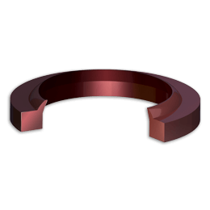

Sellos Chesterton:

Chesterton 21K Sello enchaquetado
Encaje a presión, sello rascador resistente a la abrasión
- Diseño de encaje a presión con rastrillo positivo que limpia eficazmente los contaminantes
- Polímero termoendurecido, materiales duraderos y resistentes al desgaste
- Producto mecanizado; flexibilidad para crear cualquier tamaño sin costo de herramientas

Chesterton 5K y 21K Sello
Rascador moldeado, perfil de rastrillo positivo, resistente a la abrasión
- Perfil de rastrillo positivo con cavidad cerrada; limpia eficazmente los contaminantes
- Polímero termoendurecido; materiales duraderos y resistentes al desgaste
- Producto moldeado; herramientas personalizadas disponibles para cada aplicación